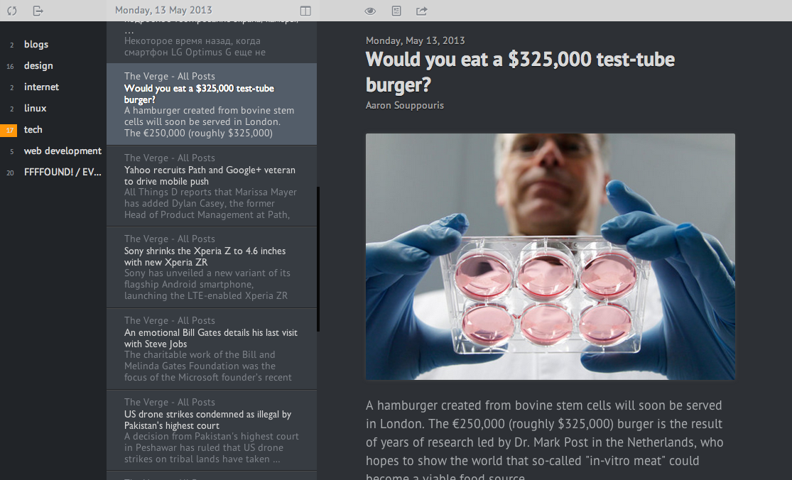

Hypnoreader makes reading RSS awesome again.
It utilizes Google Readers API so it will work only till 1st of July. Hurry up!
Downloads
Linux
Ver 0.1 Download i386 build (30MB).
OSX
Ver 0.1 Download intel build (70MB). Tested on 10.8 and may be compatible with older versions. You may wonder why it's so big? Cause it's full of awesomeness!
Windows
Bad dog! You no has windouz builds yet
Support
Don't hesistate to email author if you like Hypnoreader. All your bug reports and ideas could help further Hypnoreader development.
You can greatly support development by donating on gittip